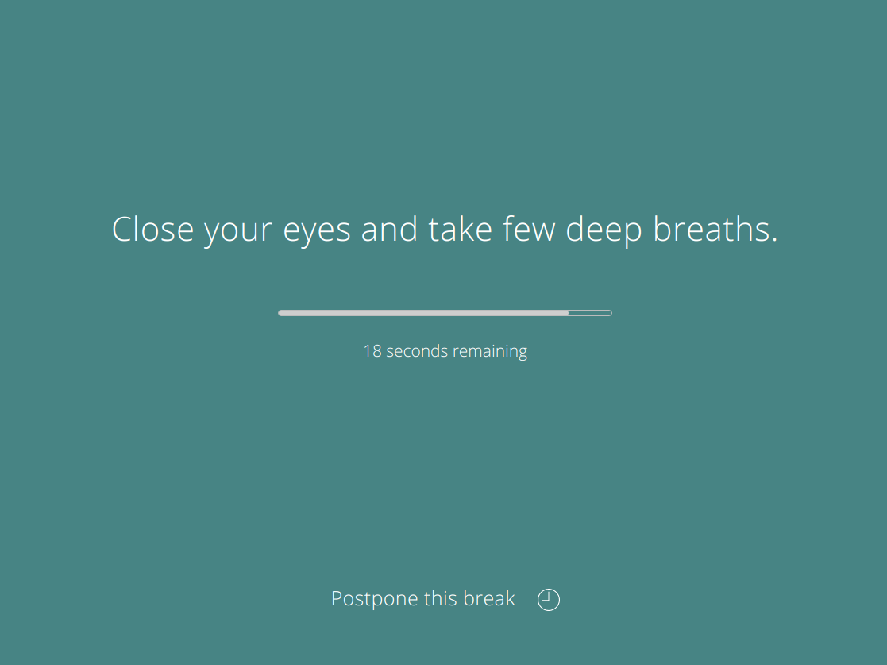
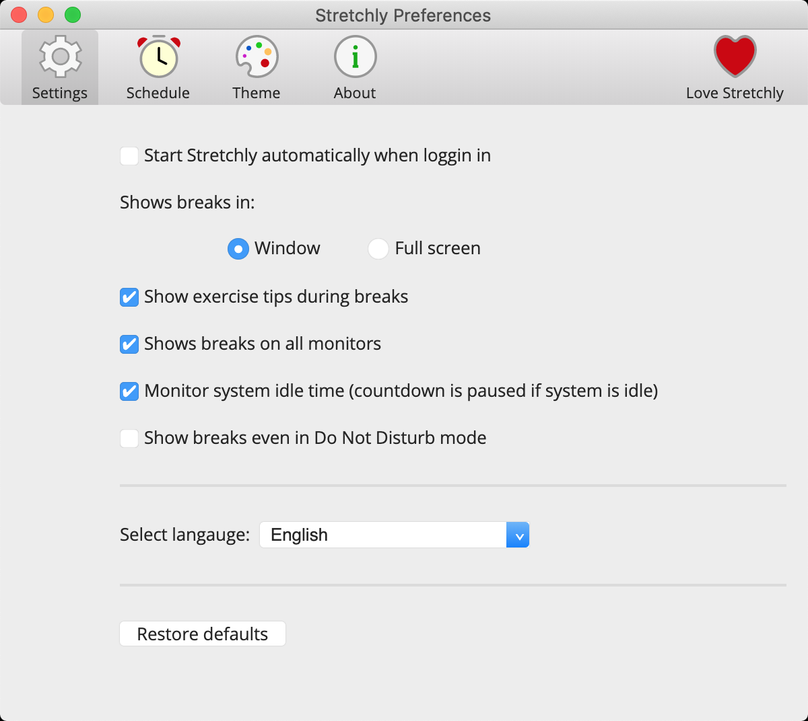

Stretchly 1.0 is here!
Posted under stretchly onHi everyone,
I am really happy to announce, that version 1.0 of Stretchly is here! You can download it from downloads page.

Version 1.0 is big milestone for Stretchly, and getting there was huge learning experience. Thanks to everyone who contributed to Stretchly since it's birth in 2016! (Jul 10, 2016 is the date of the first commit.) I am really happy that it has community of users and contributors.
Special thanks goes to Colin Shanley who designed the new logo and UI/UX for 1.0! He is awesome and you should hire him ;]
So what does 1.0 mean?
1.0 is a rework of original Stretchly mission: remind you to take breaks when working on your computer.
As Stretchly become bigger (in term of functionality and user-base), the issues with UI/UX become more visible and it also gained some technical debt. 1.0 is trying to remedy some of those. With help of professional designer, we now have better UI, UX, new awesome icons and also Dark mode. I hope you will find all aspects of Stretchly much more self-explanatory and easier to use.

A lot has also changed under the hood, some issues were fixed and new features added and we now also have more break ideas.
Added
- apk package format
- added Hungarian translation
- added ability to change the keyboard shortcuts for Skip/Postpone breaks via config.json
- show Paused icon when Breaks are paused in Natural breaks mode
- show Paused icon when Breaks are paused in Do Not Disturb mode
- Dark mode for interface
- new break ideas
- new Icon
Changed
- changed app name from
stretchlytoStretchly- this might change location of preferences file, so you might need to set up your preferences again or copy the file
- don't hide dock icon on macOS
- updated some translations
- rework UI in all windows and Tray menu
- synchronized tray status messages (tooltip, menu)
- better format remaining time
- default icon to colorful
Fixed
- adds workaround for electron's Linux/Windows fullscreen issues
- notify of new version only if new version is higher then current
Removed
- removed tutorial, now linking to Features webpage
Thanks to everyone for support on Patreon and Github!
Did you enjoy this? Copy-paste the link from the address bar to your favourite social network to share. Subscribe here.
comments powered by Disqus